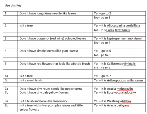
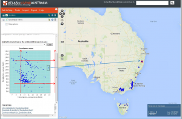
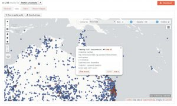

On Monday this week the Central Land Council rangers and other staff joined Australia’s Threatened Species Commissioner Dr. Sally Box near Alice Springs to launch The Tracks App at the annual ranger camp.
The Tracks App was funded by the Australian government and developed as a collaborative partnership between the CLC and the ALA. The Tracks App enables data such as animal tracks, scats, diggings and burrows to be recorded in the field and stored and analysed in the ALA.
The Tracks App being used in the field. Image credit: Central Land Council
“Our Warlpiri rangers love the app,” said ranger co-ordinator Josie Grant from the Central Land Council.
“The rest of us use the English version and can’t wait until we can have it in our first languages as well,” said Ms Grant who grew up in the Tennant Creek region and speaks Warlmanpa and Warrumungu.
The app hosted and maintained by the ALA, collects the rangers’ tracking data in a standardised way, allowing the results to be analysed across time and sites and to be compared with future surveys. This will enable land managers and conservationists to detect local changes in biodiversity, as well as monitor broader impacts of feral species and climate change across Australia’s desert regions.
The first use of the new app will be a Bilby Blitz focusing on cross border surveys of the endangered Greater Bilby (Macrotis lagotis). Twenty ranger groups from the Northern Territory and Western Australia are combining their local knowledge and tracking skills with digital technology to conduct hundreds of base line bilby surveys by recording tracks, scats, diggings and burrows on Aboriginal land during March and April.
The data recorded through The Tracks App will update and expand existing knowledge about bilby distribution and inform the national bilby recovery plan – the first national threatened species plan developed with significant input from Aboriginal people.
“The Bilby Blitz is a ground breaking threatened species program for a culturally significant animal, a two-way ecological case study that demonstrates the critical role Aboriginal people play in protecting our country,” said CLC director David Ross.
The ALA is made possible by contributions from its many partners. It receives support from the Australian Government through the National Collaborative Research Infrastructure Strategy (NCRIS) and is hosted by CSIRO.
For more information, visit The Tracks App on ALA’s BioCollect page.
For more images of The Tracks App launch visit https://photos.app.goo.gl/v6q50Vn6fYsDkv3y2

Threatened Species Commissioner Dr Sally Box and Josephine Grant at the launch of The Tracks App. Image credit: Central Land Council

Ranger Josephine Grant, Helen Wilson and Gladys Brown using The Tracks App. Image credit: Central Land Council
Article
ALA Newsletter Edition 2 February 2018
Director's Message | Highlights | Updates | Tips & Tricks | Image of the Issue | Dashboard | Handy Links
Article
Using ALA in the classroom – Classification
Former teacher and CSIRO’s Indigenous STEM Program Coordinator Geoff Guymer has a wealth of experience teaching in classrooms across Australia and loves using the ALA. This article outlines how he used the ALA in a Year 8 classroom, in Victoria, to help teach classification.
Using his experience working in remote communities in the Northern Territory, Geoff gave the classification activity a local Indigenous focus. This way, the activity fulfilled curriculum requirements for both science and the Aboriginal and Torres Strait Islander Histories and Cultures cross curriculum priority – and made it more interesting for students.
Firstly, to learn about binomial classification, the students were asked to use the ALA to investigate, and identify to species level, at least 12 different plants in the school yard. They took a number of images and some plant samples were pressed and presented like authentic herbarium specimens.
Some of the plant specimen images collected by the students
With the guidance of Boonwurrung Elder, Auntie Fay Stewart-Muir, and researching the ALA and other online resources*, the students found local Indigenous names and traditional uses for many of the plants that they identified, as well as other plants that are indigenous to the area. They learned which of the trees in the school yard would be best for carving boomerangs and the useful properties of some grass species. They also learned that some flowers that grew nearby were used to make sweet drinks.
Part of a table used by the students while completing the activity
For the final part of the activity, students learned about dichotomous keys, then constructed one to organise the 12 plants they identified. They took their dichotomous key to other classes to see if it could be followed to identify the plants successfully.

One of the dichotomous keys made by the Year 8 students
“This was an excellent activity to run in the classroom. The students learned a lot about how to describe various characteristics of the plant such as leaf shape and leaf arrangement.”
“Knowing the difference between simple and compound leaves is important to know when following keys that taxonomists use when identifying plants. They also learned that it is important to use characteristics other than flowers for identification,” said Geoff.
Another ALA classroom activity developed by Geoff is outlined in Using the ALA in the classroom to celebrate traditional knowledge and culture.
If you use the ALA in your classroom and would like to share your story, please contact Taryn Johnson, ALA’s Education Officer.
*references –
https://parksaustralia.gov.au/botanic-gardens/pub/aboriginal-plantuse.pdf
Got, B. & Nola, N. (1992). KOORIE PLANTS KOORIE PEOPLE: Traditional Aboriginal Food, Fibre and Healing Plants of Victoria. Koorie Heritage Trust, Melbourne, VIC.
Kuranga Native Nursery Pty Ltd. BUSH FOODS: Edible Plants from the Greater Melbourne Area.
Aboriginal Use Plants of the Greater Melbourne Area, David De Angelis La Trobe University Environment Collective 2005
Article
Sea Search app launched by Parks Victoria
Volunteers can now use the new Sea Search app to help monitor and protect Victoria’s rich marine parks.
A new app was launched today by Parks Victoria to enable volunteers and citizen scientists to better monitor Victoria’s unique marine life and environments.
Parks Victoria staff member at Mushroom Reef Marine Sanctuary
Sea Search is Parks Victoria’s marine citizen science program, which collects valuable information on the state of Victoria’s marine national parks and sanctuaries. It enables the community to contribute to biodiversity surveys on and in Victorian waters.
Data collected using the Sea Search app is uploaded into the Atlas of Living Australia’s (ALA) powerful citizen science platform, BioCollect.
The app is a fun, interactive and new approach for volunteer citizen scientists (members of the public interested in science and research activities). Parks Victoria has developed the app in close collaboration with the ALA so that volunteers can easily add and find information and Parks Victoria can manage marine areas with the best and latest information.
The Sea Search program has been running since 2005, with volunteers collecting data on paper datasheets in the field, which needed to be manually and laboriously entered into a database. The new app helps participants identify what they’re seeing - from sea snails to fishes, octopuses to sea stars, and penguins to seals. This information is instantly uploaded from volunteers’ phones or tablets to Parks Victoria for review and public release.
“Our protected marine environments in Victoria are incredible places to visit – getting the best information helps us manage and protect them for the future,” said Victorian Government Minister for Energy, Environment and Climate Change Lily D’Ambrosio at the launch.
BioCollect supports the needs of scientists, ecologists, citizen scientists and natural resource managers in collection and management of biodiversity, ecological and natural resource management (NRM) data. The tool was developed by, and is hosted by, the ALA and is free for public use.
Since 2010 the ALA has been working with more than 100 organisations across Australia, providing support to their citizen science activities. Through this we have gained a deep understanding of the citizen science landscape across all biodiversity-related domains and the issues which confront people organising projects, the public wanting to participate in projects, and scientists needing data in their research.
BioCollect supports the growing needs scientists wanting to engage the public in their research and the public wanting to participate in important scientific work.
The BioCollect app can be downloaded to a mobile device and through BioCollect volunteers can access Sea Search. Download BioCollect at Google Play and Apple store.
Victorian Government Minister for Energy, Environment and Climate Change, Lily D’Ambrosio launching the Sea Search app on February 28 2018.
Seagrass monitoring volunteers in Corner Inlet
Article
ALA Newsletter - first edition December 2017
Flora of Australia Launch | BioCollect goes mobile | ALA Advisory Board | ALA wins CSIRO award | Technical Updates | Tips & Tricks | ALA's Impact Dashboard | Handy Links & Resources
Article
New EcoCloud project
The ALA is engaged in an exciting new EcoCloud project aimed at providing new data and modelling capability to support ecological research and management. The ALA will be working with nine other organisations to collate, integrate and give access to ecological data then develop and train people in the use of modelling and analysis tools to provide dynamic essential environmental measures and facilitate new insights into ecosystems. ALA will be focussed on providing access to collated species trait data, with an emphasis on traits of invasive species. It is expected this will assist researchers and natural resource managers to predict and prepare for the spread of these species nationally and internationally.
Collaborators in this project are:
- Atlas of Living of Australia (ALA);
- Australian Bureau of Agricultural and Resource Economics and Sciences (ABARES);
- Australian Plant Phenomics Facility (APPF);
- CSIRO Land & Water;
- Biodiversity and Climate Change Virtual Laboratory (BCCVL) - Griffith University;
- Department of Environment and Energy (DoEE);
- eResearch South Australia (eRSA);
- Fenner School of Environment and Society (ANU);
- Terrestrial Ecosystem Research Network (TERN);
- The Queensland Cyber Infrastructure Foundation (QCIF).
For more information, please contact Hamish Holewa (Hamish.holewa@csiro.au) or Robina Sanderson (robina.sanderson@csiro.au).
Article
ALA in action: Trevor Booth, CSIRO Land and Water
Trevor Booth uses the ALA to study where particular tree species can grow in Australia and overseas, under both current and future climatic conditions. In this article, Trevor describes some of his work and provides some useful tips for anyone using the ALA’s mapping and analysis features to study plant or animal distributions.
By Trevor Booth
At the World Forestry Congress in 1991, I envisaged ‘a global climatological audit to assist conservation and sustainable development’. I imagined having interpolated climatic data available for the whole world, as well as data on species distributions, the ability to develop descriptions of species climatic requirements and to map climatically suitable areas. Thanks to the ALA team, and many other organisations and individuals who have contributed data, we now have a world-leading system with a fantastic set of tools available to carry out these analyses.
At the first ALA Science Symposium, I described how the ALA can be used to check and improve descriptions of tree species climatic requirements. I showed how the description of climatic requirements for Eucalyptus nitens from the CABI Forestry Compendium can be compared with results from both the ALA and the Global Biodiversity Information Facility (see full presentation).

In an example slide from that presentation red lines have been added to the image to show the range of suitable conditions indicated by the CABI Forestry Compendium.
In the previous ALA newsletter Lee Belbin described the use of the scatterplot facility. This was used in the example above to identify some outlying sites of particular interest. In the Director’s message in the current ALA newsletter John La Salle mentions a recent paper by Josep Serra-Diaz and colleagues that describes the importance of considering whether outliers such as these should be included in species distribution analyses or not. In this case we know that these northern E. nitens occurrences are reliably located, as they are well-known outliers for this commercially important species.
When checking outliers such as these in Australia it’s useful to access the detailed information available for each site. This facility does not work if you are using the Internet Explorer browser, but does work if you run the ALA using the freely available Chrome browser.
In the above image I’ve used a left mouse click to look at a northern E. nitens occurrence that has been added since my previous presentation. If you are using the Chrome browser clicking on the ‘view details’ option brings up a mass of information about the sample. Coordinate precision is ‘unknown’, but as can be seen from even the basic occurrence information above the latitude and longitude are only given as whole numbers in degrees. This suggests the occurrence is not accurately located and should not be used in species distribution analyses.
Data from GBIF can be used to check if a species has shown climatic adaptability beyond that of its natural distribution when tested outside Australia. Another image from my ALA Science Symposium presentation shows data that I extracted from GBIF and imported into the ALA.
When analysing climatic data for locations outside Australia we need to use WorldClim variables. Notice that the WorldClim annual mean temperature data are actually MAT x 10 i.e. the range shown on the graph is 100 to 170, but this is actually 10.0oC to 17.0oC. Again we can use the scatterplot facility to identify suspicious outliers that may need careful checking. Estimating species climatic adaptability beyond that shown by analyses of their natural distributions is not only important for species introductions, but also for estimating how natural stands in Australia may respond under climate change. It is a focus for much of my current work (see http://rdcu.be/xXnw).
Using information from both Australia and overseas is helpful for determining the range of species climatic requirements. However, the ALA is also useful for looking at likely climatic variations within a particular species distribution. It is well known that climatic tolerances vary within tree species distributions. For example, if you want to grow Eucalyptus camaldulensis (River Red Gum) at a tropical site outside Australia you would want to select a provenance (i.e. seed from a particular location) from a tropical location such as Petford in Queensland. If you want to grow it at a Mediterranean site you would select a provenance from a cooler winter rainfall location, such as Lake Albacutya in Victoria. In other words, within the whole range of a species, particularly widespread ones, there are often provenances distinctly adapted to local temperature and rainfall conditions.
Therefore when looking to restore forest sites in Australia under climate change we may want to consider using not only local seed, but also seed from locations currently experiencing climatic conditions similar to those expected in the future at that site. This is called ‘climate-adjusted provenancing’. For more information, view a short (15 min) talk I gave on “Using the Atlas of Living Australia to assist provenance selection under climate change”. This uses information from the Climate Change in Australia website and the ALA’s ‘define environmental envelope’ feature (available under Add to Map/Add Area/Other). A key slide from the presentation, combining images from three ALA screens, is shown below.
The red arrow shows the proposed forest restoration site near Albury (NSW). The red dots are natural distribution locations for Eucalyptus albens (White Box). The black shaded areas show warmer and drier locations likely to be similar to climatic conditions expected at the restoration site in 2030. At the highest mapping resolution the ALA shows E. albens occurrences within this area on the Google EarthTM map. We would not want to collect seed from an isolated tree in the middle of a paddock, as it is unlikely to be genetically diverse. But, we can see that it would be possible to collect seed from within an extensive stand of trees. Future research, including genomic studies, will help to determine the optimal distance away from the restoration site from which to collect seed.
It should be emphasized that the idea of climate-adjusted provenancing is to plant introduced as well as local seed and let nature sort out which is most appropriate. A paper (available at my ResearchGate web pages on the ‘Research’ tab, along with several other ALA-related papers) on ‘Identifying particular areas for seed collections for restoration plantings under climate change’ describes the use of the ALA for this purpose in more detail.
For more information, please contact me by email trevor.booth@csiro.au.
Article
New ALA helpdesk
Making it easier to access ALA support.
At the end of 2017, with help from our colleagues at the National eResearch Collaboration Tools and Resources project (Nectar), we implemented a new help desk ticketing system to manage ALA support enquiries. You may notice that our replies to your enquiries look a bit different and (hopefully) our response times are faster.
The new help desk directs all email enquiries to support@ala.org.au, info@ala.org.au and data_management@ala.org.au to the appropriate ALA support person and manages the responses until the problem is resolved.
Nectar partners with Australian research institutions and research communities to develop and operate virtual laboratories, eResearch tools and a national research cloud. It provides computing infrastructure, software and services that allow Australia’s research community to store, access, and analyse data, remotely, rapidly and autonomously. Nectar has a range of tools available and Nectar Cloud’s self-service structure allows users to access their own data at any time and collaborate with others from their desktop in a fast and efficient way.
Thank you to Nectar for helping us install and manage our new ALA helpdesk.
Find out more about Nectar here.
If you need help using the ALA, please email support@ala.org,au .
Article
International data quality workshops focus on fitness for use
At a recent meeting in Gainesville, Florida, an international group finalised a standard suite of data quality tests across biodiversity platforms.
The issue of data quality has been an important issue for digital biodiversity data since the inception of platforms such as the Global Biodiversity Infrastructure Facility (GBIF) and the ALA.
Other than data availability, data quality is probably the most significant issue for users of biodiversity data, especially for the research community. For this reason, GBIF and Biodiversity Information Standards (TDWG) joined forces in 2015 to establish a formal Interest Group to address the issue of data quality. The ALA has taken a leading role in this group.
Three task groups were set up to establish a framework on data, data quality tests and assertions, and a use case library. Members include the ALA, Integrated Digitized Biocollections (iDigBio), GBIF and Kurator.
One of the first outcomes was to agree that data quality is better expressed as ‘fitness for use’. Data that suits some applications does not suit others, and opinions about data quality are often personal because researchers have their own opinions on suitability and methodologies.
Task Group 2 chaired by Lee Belbin, Science Advisor Data, ALA, was charged with establishing a suite of core tests that data aggregators, such as ALA, iDigBio and GBIF, can apply to help users identify data issues. In January 2018, the task group met at iDigBio in Gainesville, Florida and finalised a set of core tests and assertions. These core tests will be implemented initially across three international platforms – GBIF, ALA and iDigBio.
This outcome is the result of many hours of work. The group reviewed over 250 tests currently in use by eight agencies around the world. The tests were classified, evaluated and refined and new tests were developed. The final suite of 98 tests and their assertions are based on the Darwin Core standard, and include a comprehensive suite of code, documentation and test data for each test.
Data quality is a pressing issue for the ongoing success of digital biodiversity platforms. The TDWG Interest Group hopes an internationally agreed, standard suite of core tests can be implemented by all data providers and data collectors, enabling greater and more appropriate use of biodiversity data.
For more information, please contact Lee Belbin or visit https://github.com/tdwg/bdq.
Members attending the Gainesville workshop. Members of Task Group 2 (Data Quality tests and Assertions): Left to right: Lee Belbin (TG2 Chair, ALA), Arthur Chapman (Data Quality Interest Group Chair, Australia), Paul Morris (Kurator, USA), John Wieczorek (Mr Darwin Core, Argentina), Paula Zermoglio (Vocabulary Task Group 4 Chair). Missing is Alex Thompson of IDigBio (USA).
Article
Watch out buzz bee, there’s a spider in the house…
Citizen scientist witnesses world-first home-share between wolf spider and bee.
Laurence Sanders, a Queensland Rail employee in Emerald, Queensland has a passion for natural history photography. Recently, he witnessed an unusual species interaction between a leafcutter bee and a wolf spider and uploaded this sighting to Bowerbird, and from there the data was fed into the ALA.

The wolf spider appears in the burrow as the leafcutter bee comes back with leaves to build her new home. Images: Laurence Sanders.
Laurence’s images show a leafcutter bee bringing a piece of cut leaf back to an apparently ‘disused’ underground burrow. But, a predatory wolf spider was already living there. For three days, Laurence watched the leafcutter bee returning with cut leaves and pollen to build and provision her underground shared home. The bee and spider frequently interacted with each other but the spider never showed aggression towards the bee.
Dr Ken Walker, Senior Curator of Entomology at Museums Victoria happened to see the record and realised it was special. After checking with experts across the world, Ken confirmed this was a world-first. This species interaction had never been recorded before.
Ken is interested in the value of digital collections and the added value they can provide the research community and Laurence’s sighting highlights this perfectly.
“Had the specimens been stored only in physical collections, the spider would be in the wet collection separated from the pinned bee in the dry collection and any behavioural interaction would remain unobserved and unrecorded. Digital collections can create new information that is not present in physical collections.”
“I’m also particularly interested in citizen science digital collections and think they have so much to add to potential biodiversity discoveries – Laurence’s observation showcases the value that ALA’s digital infrastructure and citizen scientists can make to biodiversity research and species discovery,” said Ken.

Screenshot of Laurence Sanders’ wolf spider record in the ALA
Occurrence records in the ALA
Biodiversity information in the ALA is mostly based on occurrence records from field observations, surveys and specimen collections aggregated from researchers, land managers, government agencies and natural history collections. Records contain location, date and time of sighting, and many have image, video or sound recording files and notes. In early 2018, there is over 73 million records for over 120,000 species across Australia.
The ALA supports initiatives to digitise physical collections (such as DigiVol), encourages data owners to upload existing data sets and also invites citizen scientists to record sightings. Once in the ALA, the information is freely available online to everyone – researchers, government, industry and the public.
Benefits of digital collections
Two clear benefits of ALA’s digital infrastructure are the ease of sharing and accessing biodiversity data from your desktop or mobile device and the capacity to analyse data sets in many different ways.
However, there are many unforeseen benefits of digital collections that go beyond initial expectations, such as greater interaction between different scientific disciplines and the contributions to science made by members of the general public – citizen scientists.
Citizen science and the ALA
The ALA enables all members of society to make real contributions to science. All data entered into the ALA – be it a large data set from a research group or an individual record of a plant or animal in someone’s backyard or neighbourhood – help provide an ever more detailed picture of Australia’s biodiversity. If you would like to start recording the biodiversity you see in your area, go to Record a sighting.
The ALA also supports citizen science projects through the Australian Citizen Science Project finder on our BioCollect field data collection platform. In this portal you can search for and participate in citizen science projects across Australia, as well as create and run your own biodiversity projects.
For more information about citizen science and the ALA visit Citizen Science Central.